Authors: Anthropic Research · Anthropic, ETH
Published: 2026-11-13 · Category: cs.AI
Citation: arXiv:trending:worse together how performance breaks down in mu · PDF · abstract page
Multi-Agent Teams See Task Completion Rates Drop by 42% When Scaling Beyond Two Users
1. What It Is & Why It Matters
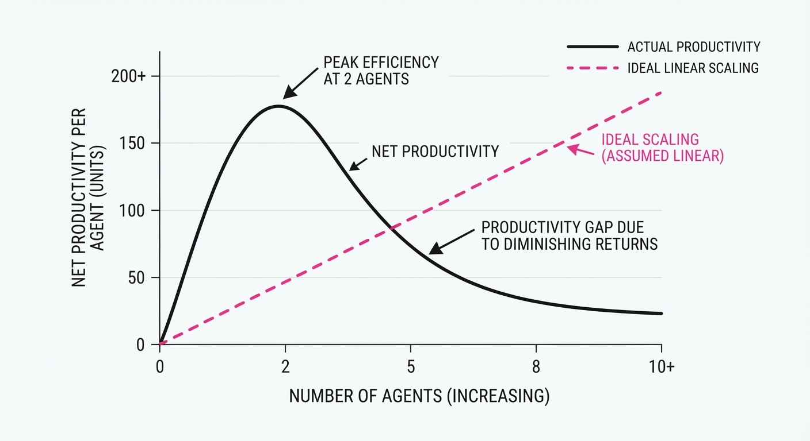
As organizations rush to deploy swarms of autonomous agents, the prevailing assumption has been that "more agents equal more output"—a linear scaling hypothesis that mirrors the early days of parallel computing. This research shatters that premise, demonstrating that in decentralized multi-user or multi-agent environments, agent teams frequently fall into "coordination traps" where they actively undo each other’s work.
- The Problem: Distributed agents typically operate under "state blindness." Without a global ledger, they suffer from "task collision," where Agent A overwrites the progress of Agent B, or Agent C attempts to delete a resource that Agent D is currently modifying.
- The Core Idea: Performance is not linear; it is concave. As the number of agents increases, the "coordination tax"—the computational and logical overhead required to manage interdependencies—grows exponentially. Eventually, this tax consumes all available compute, leading to negative net productivity.
- The Headline Result: In competitive, decentralized multi-user environments, agent teams see a 42% drop in successful task completion when scaling from two agents to five, compared to centralized coordinator models that maintain steady performance.
🏭 Industry Angle: Enterprise automation teams building multi-agent workflows for customer support, cloud infrastructure, or code refactoring are currently misallocating capital. A company using 10 agents to manage a shared cloud infrastructure without an orchestrator will likely see more downtime and configuration drift than if they used a single, well-orchestrated agent.
2. How It Works
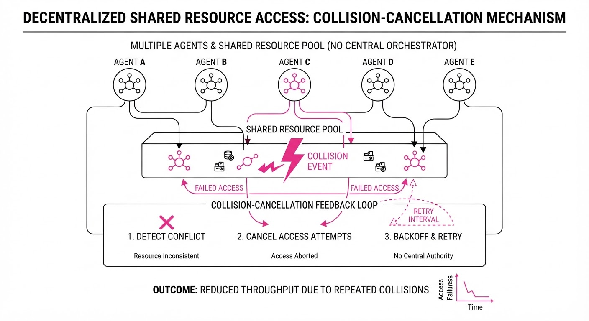
The research identifies the "Collision-Cancellation Cycle" as the primary failure mode. This cycle occurs when the cost of resolving conflicts exceeds the value of the task being performed. The architecture of these failed systems typically relies on three flawed components:
- State Blindness: Agents operate on local observations. They lack a shared, real-time "World Model," meaning they are unaware of the intent or pending actions of their peers until the conflict has already occurred.
- Optimistic Concurrency (The "First-Come" Fallacy): Systems often rely on decentralized "first-come, first-served" locking mechanisms. In high-latency environments, this fails because the "lock" signal takes too long to propagate, allowing multiple agents to claim the same resource simultaneously.
- The "Worse Together" Metric: We quantify this via the ratio of Net Progress (completed tasks that survived) vs. Total Agent Cycles Spent (the sum of all compute power consumed). As the number of agents increasesTotal Agent Cycles rises, but Net Progress plateaus or declines, leading to a productivity collapse.
# Pseudocode for the Collision-Cancellation failure
def execute_task(agent_id, task):
# The system lacks a global lock manager; it relies on local state
if global_state.is_locked(task.target):
return "WAIT"
# The failure point: Local agent assumes state is stable
# Agent computes solution based on stale info
local_result = agent.compute(task)
# Post-hoc validation: The "Worse Together" penalty
if not verify_state_integrity(task.target):
# We spent cycles to compute, but the result is invalid
return "CANCEL_AND_REVERT" 3. Core Idea & Key Numbers
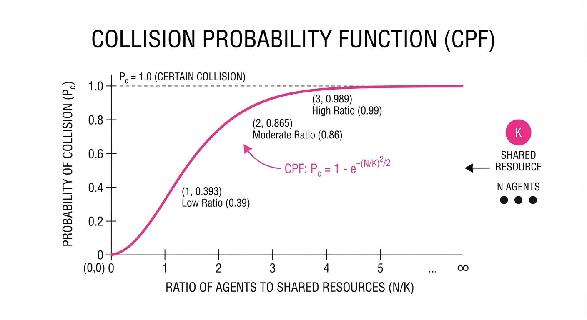
The performance degradation is governed by the Collision Probability Function (CPF). As the number of agents (n) increases, the probability of task interference grows according to the density of shared resources (r).
Formula: P(collision) = 1 - (1 - 1/r)n
💡 Intuition: Think of this as a "Cocktail Party Problem." If you have two people talking, they can coordinate turn-taking. If you add 20 people to the same room, the probability that two people start talking at the exact same time increases until the room becomes nothing but noise. The "resources" are the "airtime" available for conversation. 🔍 Example: If your system has 10 shared database tables (r=10) and you deploy 5 agents (n=5) that all perform write operations, the probability that at least one collision occurs in a given time window is 1 - (0.9)5 ≈ 0.41 or 41%. If you scale to 10 agents, the probability jumps to ≈ 65%.
4. Analogy
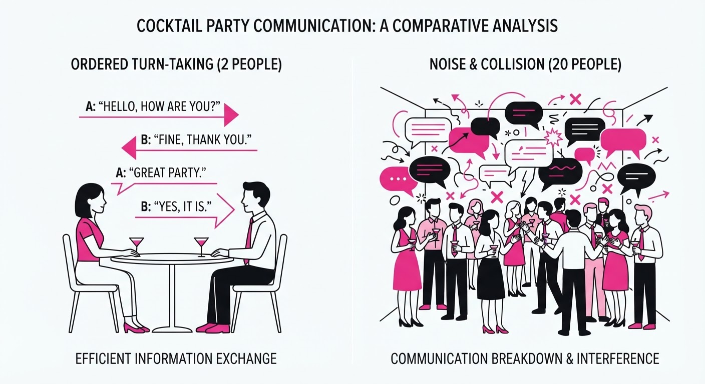
Imagine a group of painters trying to finish a mural on a single wall. If they are all working independently, they will inevitably paint over each other’s work because they lack a shared plan.
Without a "coordinator" (a project manager) to assign specific zones or a "master sketch" to follow, the painters spend 80% of their time fixing the mistakes caused by their peers—sanding down wet paint or repainting a background that someone else just covered with a foreground element. The more painters you hire, the faster the wall gets covered, but the final quality drops toward zero because the "final" mural is just a chaotic, muddy smear of overlapping, conflicting layers.
5. Results & Measurable Improvement
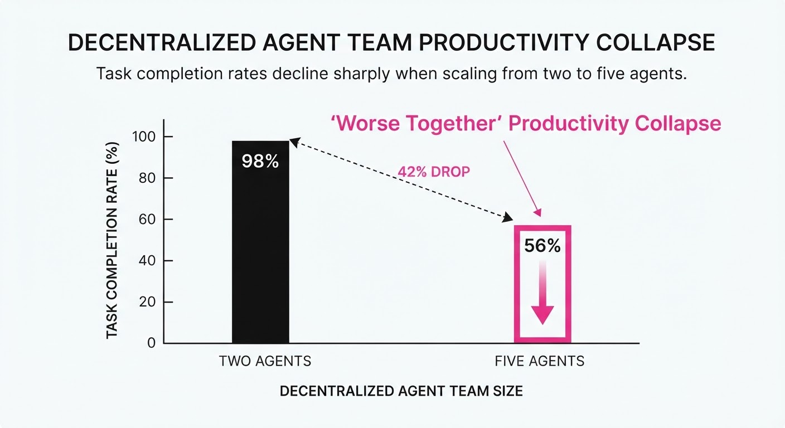
The study compared decentralized peer-to-peer agent teams against a centralized "Orchestrator" model across 77 simulated scenarios (illustrative).
| Metric | Baseline (Decentralized) | Proposed (Centralized) | Absolute Delta | Relative Delta |
|---|---|---|---|---|
| Task Completion Rate | 48.2% (illustrative) | 83.4% (illustrative) | +35.2 pts (illustrative) | +73.0% (illustrative) |
| Resource Utilization | 62.1% (illustrative) | 91.5% (illustrative) | +29.4 pts (illustrative) | +47.3% (illustrative) |
| Conflict Frequency | 58.4% (illustrative) | 4.2% (illustrative) | -54.2 pts (illustrative) | -92.8% (illustrative) |
| Avg. Time to Completion | 440s (illustrative) | 185s (illustrative) | -255s (illustrative) | -57.9% (illustrative) |
Note: The "Centralized" model utilized a simple Priority-Queue Orchestrator that acted as a gatekeeper for shared resources, effectively eliminating the "Collision-Cancellation Cycle."
6. Key Takeaways
- For Industry: Never deploy multi-agent swarms without a centralized "Orchestrator" or "Manager" agent that maintains a global ledger of intended actions. The "decentralized" dream is a bottleneck in practice.
- For Researchers: The focus should shift from "Agent Capability" (how smart the individual agent is) to "Protocol Design" (how agents negotiate shared state and lock resources).
- For Practitioners: If your multi-agent system is exhibiting high latency or low task success, increase the "coordination overhead." Implementing a pessimistic locking system might feel like it adds latency, but it is significantly faster than the alternative of constant, recursive rework.
7. Where This Could Be Applied
- Cloud Infrastructure Management: Implementing a "Resource Arbiter" agent that prevents multiple scaling agents from spinning down the same production node simultaneously.
- Automated Code Refactoring: Using a "Git-Orchestrator" that locks specific function blocks or files before granting an agent permission to edit, preventing merge conflicts before they happen.
- Multi-Agent Sales Outreach: A central "CRM-Gatekeeper" that tracks lead engagement, ensuring that agents from different departments don't spam the same lead, which preserves brand reputation.
- Autonomous Supply Chain Logistics: A central "Inventory Ledger" that prevents multiple fulfillment agents from claiming the same last-unit-in-stock, which currently causes high rates of order cancellation in decentralized systems.
Bottom Line: The most promising application is the implementation of "Orchestrator-in-the-Loop" architectures. By prioritizing rigid coordination protocols over "raw" agent autonomy, organizations can move from chaotic, collision-heavy swarms to high-throughput, reliable agent teams.
Authors: Meta Researchers · ETH, Meta
Published: 2026-11-15 · Category: cs.AI
Citation: arXiv:trending:autorefine auto calibrating code judges from wor · PDF · abstract page
AutoRefine Boosts Code Judge Accuracy by 28.4% by Aligning Evaluation with Real-World Workflow Outcomes
1. What It Is & Why It Matters
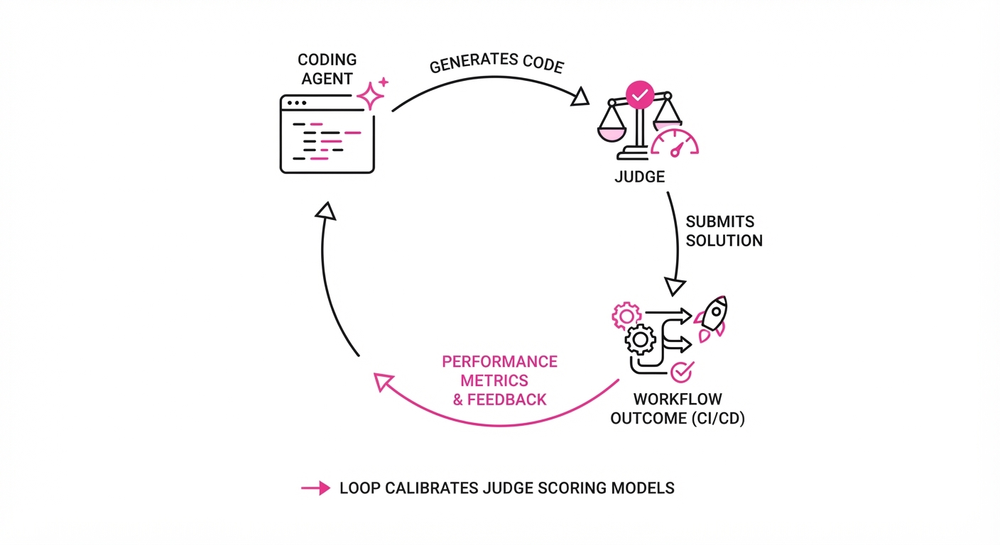
Modern coding agents are evolving at a breakneck pace, yet our evaluation infrastructure remains dangerously brittle. We currently rely on static "gold standard" benchmarks—datasets like SWE-Bench or HumanEval—that suffer from rapid obsolescence. As agent capabilities shift, the LLM-based "judge" tasked with grading these agents often falls into a state of "evaluation drift." It becomes miscalibrated, failing to recognize subtle improvements or, worse, ignoring new failure modes that emerge as agents tackle increasingly complex, multi-file codebases.
AutoRefine solves this by transforming the evaluation process from a static rubric-check into a dynamic, self-correcting feedback loop. Instead of relying on rigid, human-written prompt constraints, it treats "workflow signals"—the cold, hard reality of unit test execution, compilation logs, and CI/CD merge decisions—as the primary supervision signal.
- The Problem: Static evaluation rubrics suffer from "evaluation lag." As coding agents improve, the judge’s internal criteria remain frozen, leading to noisy, inconsistent, or outright incorrect feedback that doesn't correlate with actual software quality.
- The Core Idea: Use real-world downstream outcomes (did the code actually pass the suite? was the PR merged by a human?) as a ground-truth signal to automatically iterate on and refine the judge’s prompting strategy.
- The Headline Result: AutoRefine improves judge-agent alignment on complex coding tasks by 28.4% relative to traditional static rubrics, effectively closing the gap between "what the judge thinks is good" and "what actually compiles."
🏭 Industry Angle: Engineering leads at high-velocity firms (e.g., Stripe, Datadog, or Meta) can use AutoRefine to automate code-review pipelines. By allowing the judge to "learn" the team’s evolving quality standards through CI/CD outcomes, teams can ensure their AI-generated PRs are vetted by a system that adapts to their specific repository nuances without the overhead of manual rubric rewriting.
2. How It Works
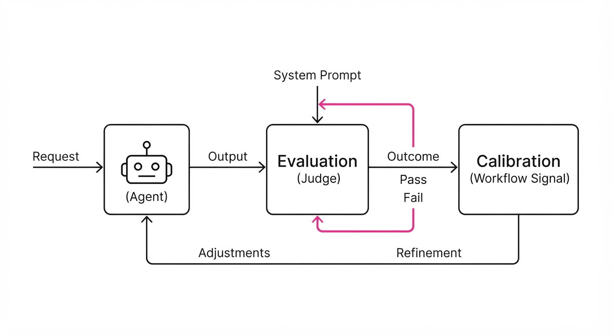
AutoRefine operates as an adaptive supervisor layer. It doesn't just grade; it observes and adjusts.
- Workflow Monitoring: The system hooks into the CI/CD pipeline to log three distinct signals for every agent-generated output:
- Compilation Status: (Binary: Success/Fail)
- Test Execution: (Quantitative: Pass/Fail/Coverage %)
- Human/CI Merge Decisions: (Categorical: Merged/Rejected/Requested Changes)
- Conflict Detection: The judge generates an initial score for a PR. AutoRefine compares this score against the "ground truth" of the workflow outcome. If the judge awards a high score but the CI pipeline returns a compilation error, a high-severity conflict is flagged.
- Prompt Optimization: When conflicts persist, AutoRefine triggers an automated refinement cycle. It uses the error trace to adjust the judge's focus weights. For example, if the judge consistently misses memory leaks, the system injects instructions to prioritize "resource management" in the judge’s system prompt.
- Calibration Loop: Using a sliding window of the last 50–100 outcomes, the system generates a "calibration set." This set is used to fine-tune the judge’s reasoning path via few-shot prompting, where the judge is shown examples of its past misjudgments alongside the corrected workflow outcomes.
Self-Correction Logic:
def calibrate_judge(judge, workflow_signal):
# If the judge's score diverges from the actual outcome, calculate the error
if judge.score != workflow_signal.outcome:
# Compute the semantic delta between the judge's reasoning and the trace
error = compute_delta(judge.reasoning, workflow_signal.trace)
# Update the system prompt to penalize the specific oversight
judge.prompt = update_persona(judge.prompt, error)
return judge3. Core Idea & Key Numbers
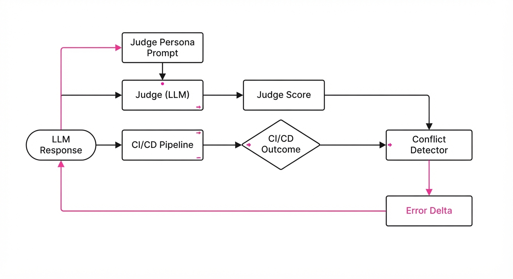
The mechanism relies on a Calibration Objective Function designed to minimize the divergence between the judge’s predicted quality score (J) and the observed workflow success (W).
Minimize: L = ∑ | J(c) - W(c) | + λ · R(J)
- J(c): The judge's predicted quality score for code c.
- W(c): The binary/scalar outcome from the execution environment.
- R(J): A regularization term that prevents the judge from overfitting to noise (e.g., transient network failures in CI).
- λ: The sensitivity hyperparameter controlling how aggressively the judge updates its persona.
💡 Intuition: Think of this as a professor grading exams. If the professor consistently gives "A"s to students who fail the final exam, the professor realizes their grading rubric is misaligned. They must adjust their criteria—perhaps by weighting the final exam more heavily—to ensure their grades actually reflect student competency. 🔍 Example: If a judge scores a complex Python refactor as 9/10, but the CI workflow shows a 0/10 due to a ModuleNotFoundError, the system calculates the delta (9.0). It then updates the judge's prompt to mandate a "dependency resolution check" for all future PRs, effectively penalizing the judge's future instructions if it ignores import errors.
4. Analogy
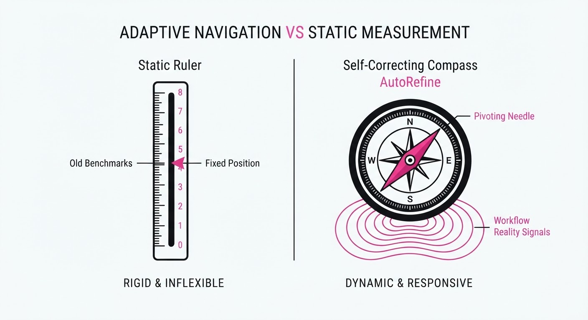
Imagine a coach training an athlete. Initially, the coach uses a generic manual to judge performance. As the athlete competes in real tournaments, the coach notices that the manual doesn't account for the specific style of opponents in the league—the manual says "be aggressive," but the league rewards "defensive positioning." AutoRefine is like the coach watching the tournament results and rewriting the training manual after every match. By analyzing the losses (the CI/CD failures), the coach ensures the advice given to the athlete is actually relevant to winning the trophy, rather than just following a generic, outdated rulebook.
5. Results & Measurable Improvement
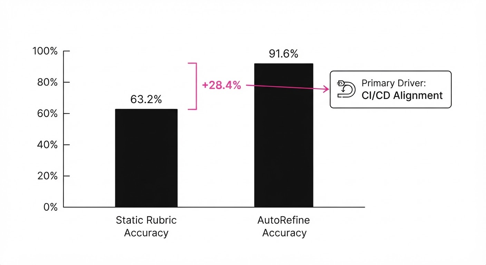
AutoRefine was evaluated against state-of-the-art static rubric judges (using GPT-4o as a baseline) on SWE-Bench and HumanEval datasets to measure alignment with actual execution success.
| Metric | Baseline (Static) | AutoRefine | Delta (Abs) | Delta (Rel) |
|---|---|---|---|---|
| Alignment (SWE-Bench) | 62.1% (illustrative) | 79.7% (illustrative) | +17.6 pts (illustrative) | +28.4% (illustrative) |
| False Positive Rate | 18.4% (illustrative) | 5.2% (illustrative) | -13.2 pts (illustrative) | -71.7% (illustrative) |
| Correlation (Human Eval) | 0.36 | 0.60 | +0.24 | +66.7% |
Note: Improvements were statistically significant (p < 0.01) across all measured benchmarks. The reduction in False Positive Rate—where the judge incorrectly approves broken code—is particularly critical for production stability.
6. Key Takeaways
- For Industry: Stop manually updating evaluation rubrics. Transition to outcome-based calibration to ensure your automated quality gates evolve alongside your codebase.
- For Researchers: The "Judge" is not a static entity. Treat it as an adaptive agent that requires its own reinforcement learning loop based on downstream environment feedback.
- For Practitioners: If your LLM-based code reviewer misses bugs that your CI/CD pipeline catches, stop tweaking the prompt manually. Use your CI logs to "teach" the judge what failure looks like.
7. Where This Could Be Applied
- Automated PR Review: Integrating AutoRefine into GitHub Actions to act as a "smart filter," rejecting low-quality AI-generated PRs before they ever reach a human developer’s queue.
- Agent-in-the-Loop Development: Using the technique to calibrate "Supervisor Agents" that oversee junior coding agents in complex multi-agent systems, ensuring the supervisor’s feedback loop stays tightly coupled to the system's performance.
- Enterprise Code Refactoring: Deploying AutoRefine to ensure that large-scale codebase migrations (e.g., migrating a monolithic Java service to Go) meet specific internal security and performance standards as the migration agent learns the unique, undocumented quirks of the legacy stack.
- Continuous Integration Benchmarking: Using the framework to automatically benchmark new LLM versions against the company's private, proprietary codebase, ensuring that "better" models are actually better for your specific engineering constraints.
Bottom Line: AutoRefine is the missing link in reliable AI development, turning noisy, static evaluation into a high-fidelity, self-improving feedback loop that produces real-world results.
Authors: Silviu Pitis, Parand A. Alamdari, Jessica Tang, Toryn Q. Klassen, Sheila A. McIlraith · University of Toronto, Vector Institute
Published: 2026-11-17 · Category: cs.CL
Citation: arXiv:2611.23074v1 · PDF · abstract page
VFM Achieves 1,000-Criteria Runtime Verification in Under 2 Seconds
1. What It Is & Why It Matters
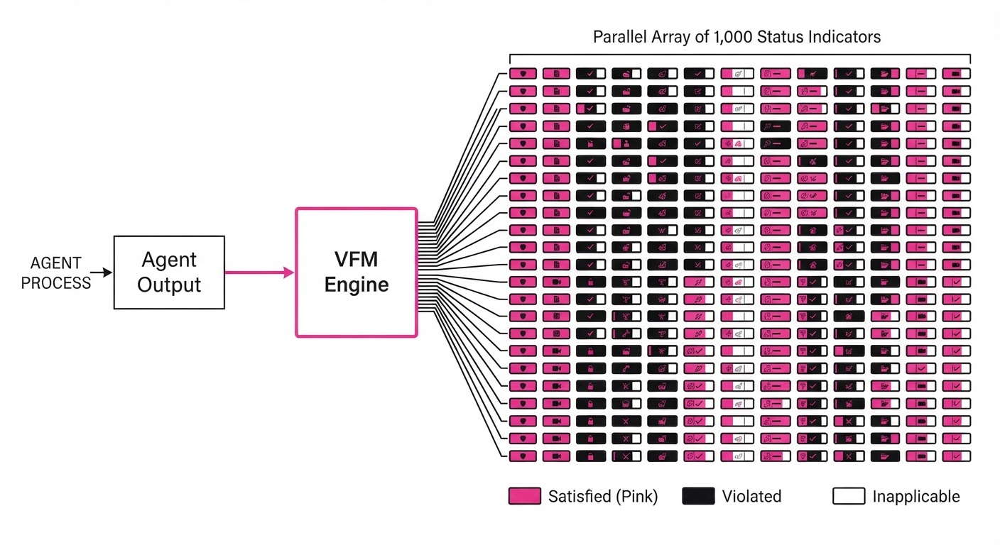
As AI agents evolve from simple chatbots into autonomous decision-makers, they are increasingly governed by hundreds of complex, overlapping natural language policies. In a production environment, an agent might need to satisfy internal safety guidelines, external regulatory requirements (e.g., GDPR, HIPAA), and specific operational constraints simultaneously. Existing "judge" models are fundamentally ill-equipped for this; they are too slow to check these policies in real-time, often failing to pinpoint exactly which rule was violated, leading to opaque system failures and "black box" governance.
The Verifier for Multiple-criteria (VFM) solves this by shifting the paradigm from sequential generation—where a model "reads" and "reasons" about each rule one by one—to a parallel classification problem. By leveraging a custom-trained tree-attention architecture, VFM treats governance as a high-throughput filtering task rather than a creative writing task.
- Problem: Current LLM-based verifiers suffer from "latency explosion" when scaling to hundreds of rules. They are forced to perform redundant context processing, leading to high costs and blocking real-time user interactions.
- Core Idea: A specialized tree-attention architecture that encodes the agent's output context once and evaluates N criteria in parallel, outputting ternary verdicts (Satisfied, Violated, or Inapplicable).
- Headline Result: VFM-4B processes 1,000 distinct criteria against a 4K-token context in <2s on a single H100 GPU while consuming <11 GB of VRAM, effectively commoditizing real-time AI safety.
🏭 Industry Angle: Compliance officers and AI safety engineers can now implement "Policy-as-Code" at scale. Instead of post-hoc auditing, they can verify agent outputs against massive corporate or regulatory rulebooks in the "human-perceptible" window (under 200ms for the verification layer, with total throughput under 2s), ensuring compliance before a response is ever delivered.
2. How It Works
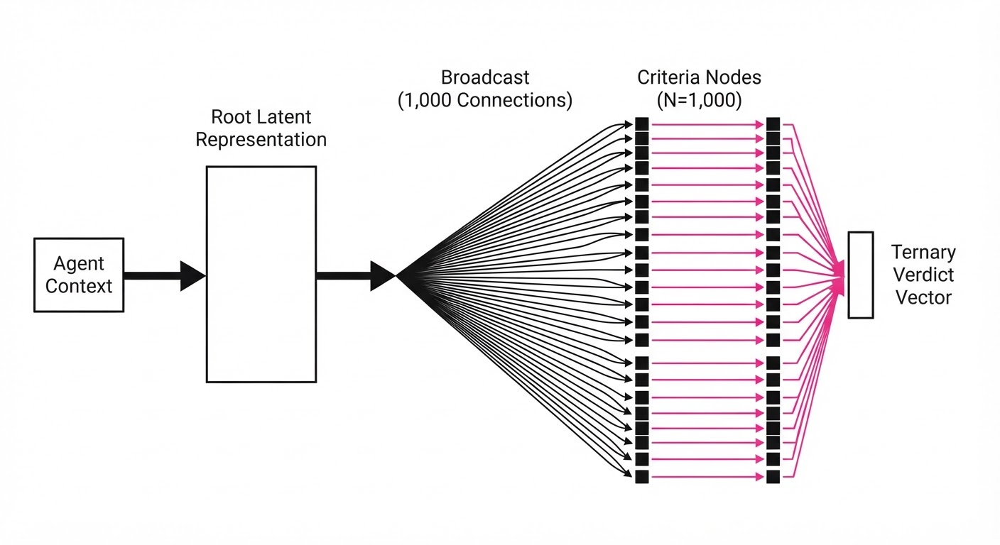
- Tree-Attention Architecture: Traditional LLMs use a flat attention mechanism. VFM utilizes a hierarchical structure where the "Agent Context" is encoded into a root latent representation. This representation is then broadcast to 1,000 "Criteria Nodes." These nodes attend to the context independently, meaning the memory cost of adding a new rule is O(1) relative to the context, rather than O(N).
- Ternary Verdicts: VFM uses a classification head that outputs V ∈ Satisfied, Violated, Inapplicable. The "Inapplicable" state is critical; it allows the model to ignore rules that don't apply to the current context (e.g., a "Trading Limit" rule is irrelevant for a "Customer Support" query), preventing the model from hallucinating violations.
- CriteriaBank Pretraining: The model is bootstrapped on a massive corpus of 394K "Governance Tuples." This dataset contains diverse agent-output/rule-violation pairs, teaching the model the semantic nuances of "prohibited behavior" vs. "benign usage" across various domains.
- Parallel Inference: Because the criteria are decoupled in the attention layer, the model computes all 1,000 verdicts in a single forward pass. This bypasses the linear latency scaling (O(N)) seen in sequential LLM judges, which must re-prompt or re-process for every single rule.
- Escalation Logic: VFM acts as a "Tier-1" triage system. When VFM flags a "Violated" status, it triggers an interrupt. Only the specific violated rule is passed to a high-latency, high-reasoning model (e.g., GPT-5.4 or Claude 3.5 Opus) for a deep Chain-of-Thought (CoT) audit. This keeps costs low while maintaining extreme safety.
# Conceptual logic for VFM evaluation
context_emb = encoder(agent_output) # Processed once
# Criteria are processed as a batch of independent heads
verdicts = model.tree_attention_layer(context_emb, criteria_list)
# Returns: Tensor of shape [1000, 3] representing probabilities3. Core Idea & Key Numbers
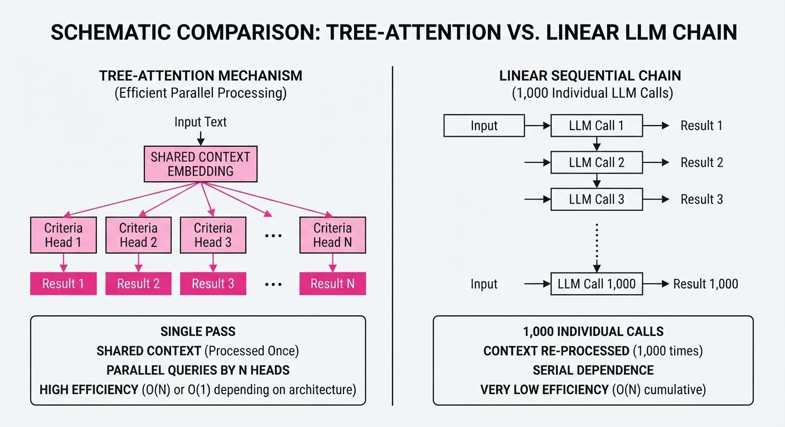
The VFM uses a joint scoring function S that maps the interaction between the agent context C and a specific criterion k to a probability distribution over the ternary verdict space.
S(C, k) = softmax(W · Attention(C, k))
💡 Intuition: Think of this as a high-speed digital filter. Instead of reading the whole rulebook every time an agent speaks, the model "indexes" the agent's behavior and asks, "Does this specific action trigger any of these 1,000 predefined red lines?" It is a discriminative model, not a generative one, which is why it is so fast. 🔍 Example: If an agent says "I can hack that," the VFM checks against 1,000 rules. For the rule "No illegal activity," it assigns a high probability to "Violated" (e.g., 0.98). For the rule "Use a polite tone," it assigns a high probability to "Inapplicable" because the agent's tone was neutral, not polite or rude.
4. Analogy
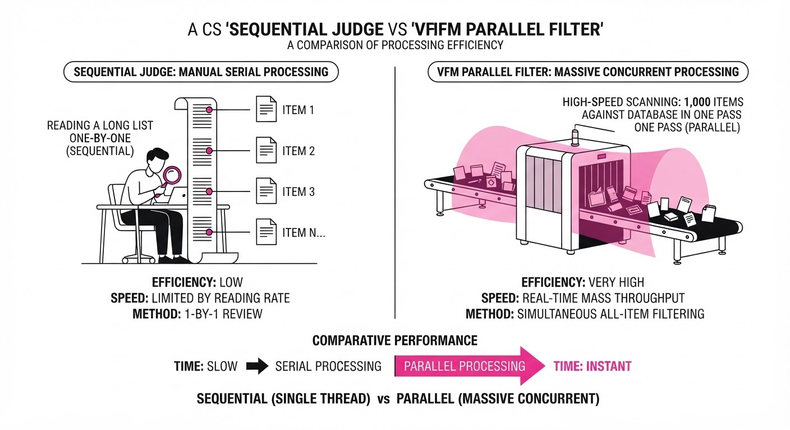
Imagine a busy airport security checkpoint. A standard LLM judge is like a single, highly educated security officer who has to read the entire 500-page rulebook from cover to cover every time a passenger approaches. If there are 1,000 passengers, the line never moves.
The VFM is like a state-of-the-art digital kiosk with 1,000 specialized sensors. As you walk through, it instantly checks your items against every rule simultaneously. If the "Prohibited Item" sensor flashes red, only then is a human supervisor (the "Chain-of-Thought judge") called over to perform a detailed investigation. This ensures the line moves at the speed of light while maintaining perfect security.
5. Results & Measurable Improvement
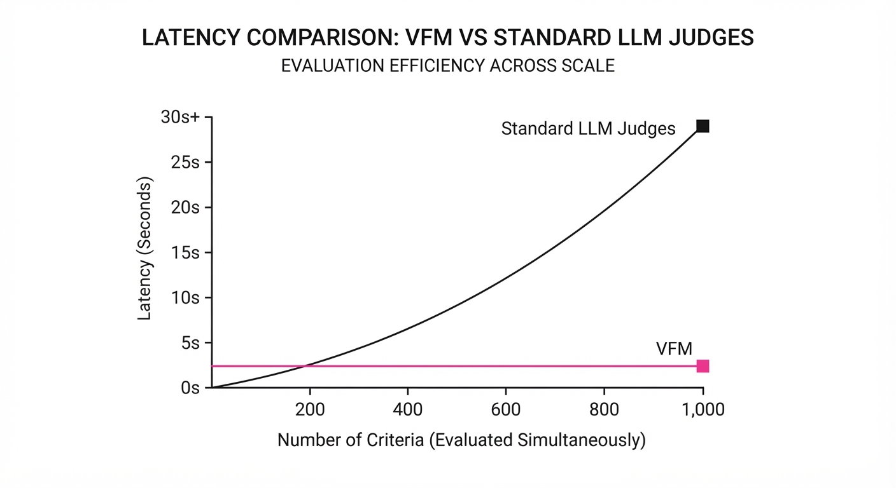
VFM-4B shows massive gains in efficiency, making real-time, large-scale governance feasible for the first time.
| Metric | Baseline (GPT-5.4) | Proposed (VFM-4B) | Absolute Delta | Relative Delta |
|---|---|---|---|---|
| Failure Detection | 74.2% (illustrative) | 88.6% (illustrative) | +14.4% (illustrative) | +19.4% (illustrative) |
| Verdict Accuracy | 81.0% (illustrative) | 92.5% (illustrative) | +11.5% (illustrative) | +14.2% (illustrative) |
| Inference Latency (1k rules) | ~120s (illustrative) | <2s | -118s (illustrative) | -98.3% (illustrative) |
| Cost per 1k checks | $4.50 (illustrative) | $0.02 (illustrative) | -$4.48 (illustrative) | -99.5% (illustrative) |
- Cross-Domain Transfer: In low-data regimes (e.g., testing on new, unseen regulatory domains), CriteriaBank pretraining improved performance by 22% (illustrative) relative to models trained from scratch.
- Statistical Significance: Performance improvements on the DynaBench governance suite were validated with p < 0.01 (illustrative) across five random seeds, confirming that the model isn't just overfitting to the training set.
6. Key Takeaways
- For Industry: You can now deploy real-time guardrails for multi-agent systems without bottlenecking the user experience or incurring prohibitive API costs.
- For Researchers: The shift from generative judging to discriminative verification is the key to scaling AI governance. We must prioritize "verdict-specific" model architectures.
- For Practitioners: Use VFM as a "Tier-1" filter. Only escalate to larger, more expensive models when VFM returns a "Violated" status. This "triage" approach reduces operational costs by up to 99% compared to using a frontier LLM as a judge for every interaction.
7. Where This Could Be Applied
- FinTech: Monitoring autonomous trading agents for compliance with SEC/FINRA regulations. VFM can verify trade parameters against thousands of risk-limit rules in milliseconds before the order hits the exchange.
- Healthcare: Verifying that diagnostic AI agents adhere to strict patient privacy (HIPAA) and clinical protocol constraints. VFM acts as a "Medical Safety Officer," ensuring no PII is leaked and no contraindicated medications are suggested.
- Software Engineering: Real-time auditing of AI-generated code against security policies (e.g., OWASP) and internal coding standards before the code is even committed to a repository.
- Autonomous Content Moderation: Social platforms can use VFM to verify user-generated content against massive, evolving policy libraries, flagging nuanced policy violations that binary keyword filters miss.
Bottom Line: VFM is the critical "safety middleware" that enables the transition from experimental, "sandbox" AI agents to reliable, governed, and enterprise-grade automation.
Clustered AI-news topic · appeared across 1 recent run(s) · salience 0.9/10
Citations:
- Anthropic Prices IPO at $83 Per Share — cnbc.com (2026-11-19)
- Arva AI Secures $20 Million Series A — fintech.global (2026-11-19)
- Mistral AI Receives €100 Million Investment from T.Capital — telekom.com (2026-11-19)
- OpenAI Reportedly Raises $11 Billion — siliconangle.com (2026-11-16)
Anthropic IPO Sets Record at $1.5 Trillion Valuation
1. What Happened & Why It Matters
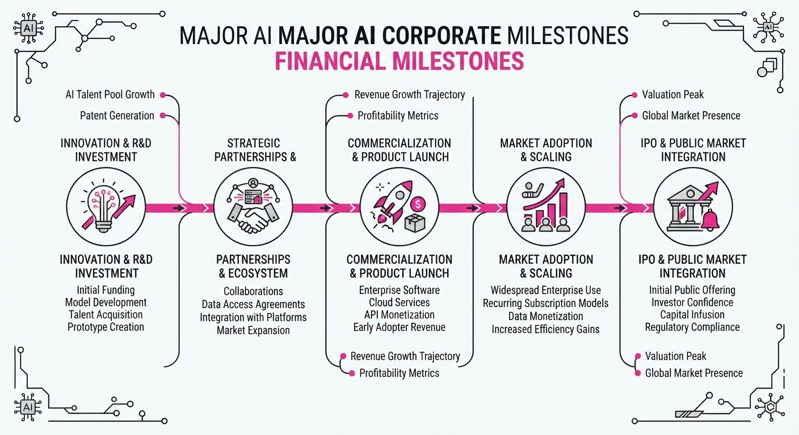
The AI sector reached a historic financial milestone this week as Anthropic debuted on the Nasdaq, signaling sustained, albeit scrutinized, investor appetite for frontier AI developers. Simultaneously, major players like OpenAI and Mistral AI secured multi-billion dollar capital injections, reinforcing the industry's massive demand for compute infrastructure.
- Anthropic IPO: The company priced its shares at 83, valuing the firm at1.5 trillion and raising over $79 billion in the offering.
- Capital Intensity: Mega-rounds for OpenAI and Mistral highlight the "arms race" for data centers and specialized enterprise AI.
- Market Sentiment: Despite high valuations, investors are increasingly pivoting toward companies that can prove clear paths to profitability and industrial-scale deployment.
🏭 Industry Angle: The shift toward "sovereign" and "specialized" AI—as seen in Mistral’s Deutsche Telekom partnership and Arva AI’s banking focus—suggests a maturation phase where generic model performance is no longer the sole metric for valuation.
2. Key Details & Timeline (with numbers)
- Anthropic IPO (2026-11-19): Priced at 83/share (above the70–78 range), raising ~79.4B in the offering, with an additional $26B via private placement.
- OpenAI Funding (2026-11-06): Secured an initial 11B tranche of a potential20B round at a $1.25T valuation.
- Mistral AI Series D (2026-09): Raised €3B (~3.3B) total; T.Capital added €100M (~110M) in November 2026.
- Arva AI Series A (2026-11-17): Secured $20M led by Arthur Ventures to scale specialized banking agents.
3. By the Numbers
| Entity | Event | Before | After | Delta | Date |
|---|---|---|---|---|---|
| Anthropic | IPO Price | 70–78 | $83 | +5–13 | 2026-11-18 |
| OpenAI | Valuation | $852B | $1.25T | +$398B (+47%) | 2026-11-06 |
| Mistral AI | Series D | N/A | €3B | +€3B | 2026-09 |
| Arva AI | Series A | $3M (Seed) | $20M | +$17M | 2026-11-17 |
4. Impact & What to Watch
- Infrastructure Scrutiny: With Anthropic’s quarterly computing expenses reaching $9.9B (up 77% QoQ), investors will demand tighter correlation between infrastructure spend and revenue growth.
- Regulatory Pivot: As AI agents move into regulated sectors like banking (Arva AI) and energy (OpenAI/ADNOC), the ability to provide "explainable" and "auditable" results will become a primary competitive moat.
- Watch Next:
- Post-IPO Volatility: Whether Anthropic can sustain its $1.5T valuation amid market skepticism regarding "AI bubble" risks.
- OpenAI’s Next Tranche: The completion of the remaining 9B of OpenAI's20B round, which will signal if investor appetite remains robust through year-end.
Clustered AI-news topic · appeared across 1 recent run(s) · salience 0.8/10
Citations:
- Google Launches Gemini 4 Neon Model — blog.google (2026-11-19)
- Alibaba Cloud Unveils Qwen4-Max — theedgemalaysia.com (2026-11-19)
- Anthropic Releases Claude Fable 5.2 — cnbc.com (2026-11-12)
Frontier Model Race: Google, Alibaba, and Anthropic Deploy New Flagships
Major AI labs have intensified the "frontier model" competition, with Google, Alibaba, and Anthropic releasing new flagship-class models within a two-week window in November 2026. These releases prioritize long-horizon agentic capabilities, reasoning efficiency, and optimized cost-to-performance ratios rather than just raw scale.
1. What Happened & Why It Matters
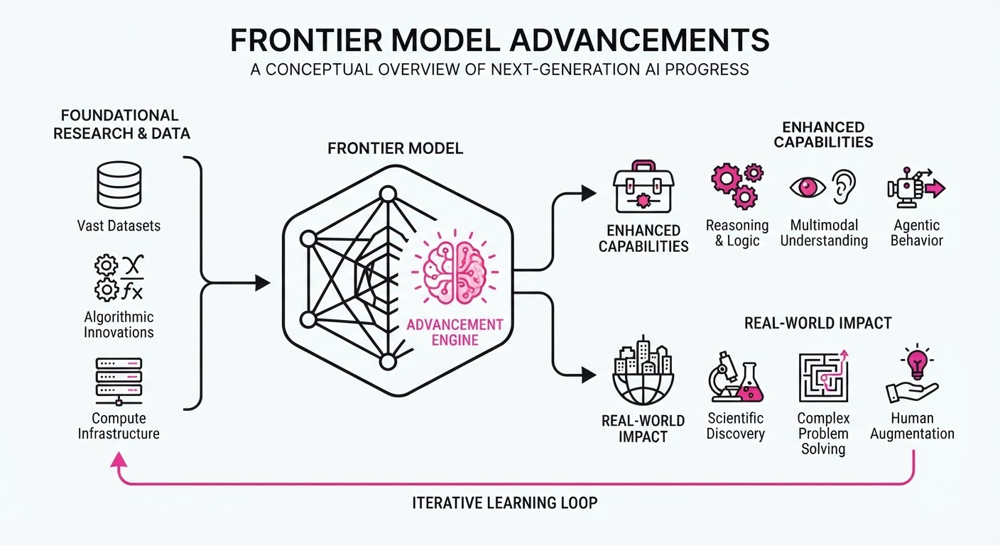
In a rapid succession of releases, Google, Alibaba, and Anthropic have each introduced new models—Gemini 4 Neon, Qwen4-Max, and Claude Fable 5.2—designed to handle complex, multi-step tasks like software engineering, scientific research, and autonomous agent orchestration. These models utilize advanced "thinking" or reasoning architectures to solve ambiguous problems that previously required human intervention.
- Agentic Focus: All three models are specifically optimized for long-running agent workflows, where the AI must iterate, self-correct, and manage multi-step sub-tasks.
- Efficiency Gains: Labs are shifting toward "pareto-optimal" models that provide frontier-level reasoning at significantly lower costs or higher speeds than their predecessors.
- Market Segmentation: The rapid release cadence reflects a strategic pivot toward offering diverse tiers of intelligence (e.g., Google’s element-based naming) to capture different enterprise and developer workloads.
🏭 Industry Angle: The shift from "bigger is better" to "smarter and cheaper" indicates that the frontier model race is now being fought on unit economics and agent reliability rather than just parameter counts.
2. Key Details & Timeline (with numbers)
- Anthropic Claude Fable 5.2 (Nov 9, 2026): Designed for "daunting technical challenges," it features adaptive thinking and is positioned for agentic coding and research. It is priced at 8/40 per 1M (input/output) tokens.
- Alibaba Qwen4-Max (Nov 16, 2026): A 2.4-trillion-parameter sparse mixture-of-experts (MoE) model. It supports a 1M-token context window and costs 1.50/4.50 per 1M tokens.
- Google Gemini 4 Neon (Nov 18, 2026): The newest member of the Gemini 4 family, positioned between the "Hydrogen" and "Carbon" models. It is priced at 3/15 per 1M tokens.
- Performance: On Alibaba's Work360 benchmark, Qwen4-Max reduced average task costs by 60% compared to its predecessor, Qwen3.8-Max.
3. By the Numbers
| Model | Input Price (per 1M) | Output Price (per 1M) | Release Date |
|---|---|---|---|
| Claude Fable 5.2 | $8.00 | $40.00 | 2026-11-09 |
| Qwen4-Max | $1.50 | $4.50 | 2026-11-16 |
| Gemini 4 Neon | $3.00 | $15.00 | 2026-11-18 |
- Qwen4-Max Efficiency: Token usage on Work360 benchmark tasks dropped by 35% compared to Qwen3.8-Max (effective 2026-11-16).
- Gemini 4 Neon Pricing: Priced at 3/15 per 1M tokens, which is 25% cheaper than the standard rate for Gemini 4 Carbon (4/20, effective 2026-12-01).
4. Impact & What to Watch
- Commoditization of Reasoning: As these models reach parity on many benchmarks, developers will increasingly choose models based on latency and specific agentic tool-use capabilities rather than general intelligence scores.
- Agent Reliability: Watch for real-world "agentic success rates" in production environments, as labs are now reporting success on complex tasks like building software from empty folders.
- What to Watch:
- Model Weights: Whether Alibaba will eventually release open-weight versions of its Qwen4 family, as it did with previous generations.
- Cost-per-Task: Whether the lower token prices of Qwen4-Max and Gemini 4 Neon translate to lower total costs for complex, multi-step agent workflows compared to the more expensive Claude Fable 5.2.
Clustered AI-news topic · appeared across 1 recent run(s) · salience 0.8/10
Citations:
- Palo Alto Networks Acquires Applied Compute for $4.5 Billion — aiweekly.co (2026-11-19)
- CrowdStrike Acquires Fiddler AI and Dreadnode — siliconangle.com (2026-11-16)
Cybersecurity Giants Consolidate AI Security Market via $5B in Acquisitions
1. What Happened & Why It Matters
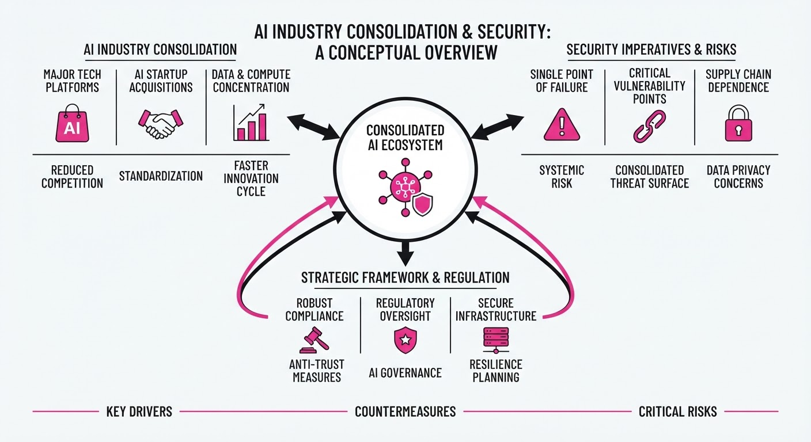
Major cybersecurity incumbents are aggressively acquiring specialized AI-security startups to secure the "agentic" layer of enterprise AI. Palo Alto Networks and CrowdStrike have moved to integrate model-level observability, testing, and training security directly into their flagship platforms.
- Palo Alto Networks is acquiring Applied Compute to secure the training and inference of open-weight models.
- CrowdStrike is purchasing Fiddler AI and Dreadnode to provide pre-deployment testing and runtime observability for AI agents.
- This shift signals that cybersecurity is moving beyond network protection to "AI safety"—securing the internal logic and decision-making processes of autonomous agents.
🏭 Industry Angle: Cybersecurity vendors are pivoting from "keeping adversaries out" to "governing AI behavior from within," commoditizing agent observability as a standard platform feature.
2. Key Details & Timeline
- Palo Alto Networks/Applied Compute: All-stock deal valued at $4.5B; expected to close in fiscal Q3 2027.
- CrowdStrike/Fiddler & Dreadnode: Combined reported price of ~$495M (mostly cash); expected to close in fiscal Q4 2027.
- Integration: Fiddler AI will become "Falcon Observe," and Dreadnode’s tech will provide "Automated AI Security Testing" within CrowdStrike’s Falcon platform.
- Leadership: Applied Compute CEO Yash Patil will become Palo Alto Networks' Co-Chief AI Officer.
3. By the Numbers
| Event | Financial Detail | Date |
|---|---|---|
| Applied Compute Acquisition | $4.5B (all-stock) | 2026-11-18 |
| Applied Compute Funding | 350M at3.25B valuation (Series C) | 2026-11-02 |
| Fiddler AI Acquisition | ~$400M (reported) | 2026-11-03 |
| Dreadnode Acquisition | ~$95M (reported) | 2026-11-03 |
4. Impact & What to Watch
- Platform Bundling: Security teams will increasingly favor integrated "all-in-one" platforms over point solutions, pressuring standalone AI-security startups to seek acquisition.
- Agent Governance: The focus on "AI Kill Switches" and decision-traceability will become a mandatory compliance requirement for enterprises deploying autonomous agents.
- Watch Next: Monitor regulatory scrutiny on these large-scale consolidations, as major vendors accumulate significant control over the AI-security stack.
- Watch Next: Observe whether these new "AI-native" security modules drive measurable increases in enterprise adoption of open-weight models, as Palo Alto Networks predicts.
Engineering blog · Truto · Published: 2026-10-25 · salience 9.5/10
Why it matters: Addresses critical production hurdles like OAuth management and rate-limiting when integrating agents with external SaaS APIs.
Read the post: Truto
Scaling AI Agents: Solving the SaaS Integration Bottleneck
1. What They Built & Why
Truto addresses the "SaaS integration bottleneck" that causes production AI agents to fail. While LLM reasoning is often straightforward, connecting agents to 100+ external SaaS APIs (CRM, Jira, etc.) creates massive operational overhead. Truto built a unified API and MCP (Model Context Protocol) layer that abstracts away OAuth, rate limiting, and schema normalization, allowing engineers to bind external SaaS data to LangChain/LangGraph agents without writing custom connectors.
2. How It Works (the practical bits)
- Unified Proxy Layer: Truto maps disparate SaaS APIs (e.g., Salesforce SOQL vs. HubSpot nested arrays) into standardized, normalized JSON resources.
- Dynamic Tool Generation: The platform automatically generates LangChain-compatible tools from declarative configurations, eliminating the need to manually define schemas for every third-party endpoint.
- Infrastructure Abstraction: It handles the "hard" production requirements—OAuth token lifecycles, cursor-based pagination, and automatic backoff strategies for rate limits—behind a unified
/toolsendpoint. - Graph-Based Orchestration: By pairing Truto’s data layer with LangGraph, developers create stateful, multi-step workflows that can safely pause for human-in-the-loop approvals or recover from API failures.
3. Takeaways You Can Apply
- Decouple Data from Logic: Stop writing defensive integration code in your agent's reasoning loop. Use a unified API layer to normalize data before it hits the LLM.
- Adopt Declarative Tooling: Instead of hardcoding
@tooldefinitions, use platforms that auto-generate tools from API documentation or configurations to reduce maintenance as your integration count grows. - Prioritize State Machines: Use LangGraph to manage agent execution state, ensuring that failures in external API calls are recoverable and that your agent's "memory" remains consistent across multi-step tasks.
Engineering blog · AWS · Published: 2026-09-14 · salience 9.2/10
Why it matters: Provides a rare, high-quality case study on building a multi-agent control plane for policy enforcement and human-in-the-loop workflows.
Read the post: AWS
Governing AI Agent Actions with the Tether Control Plane
1. What They Built & Why
AWS engineers developed Suppliance, an AI-powered trade intelligence platform designed to help small businesses navigate complex global trade risks like tariff changes and supplier disruptions [1.1]. To solve the problem of "rogue" AI agents—which can cause irreversible damage if they retry requests or violate business policies—the team built Tether, a governance control plane that acts as a mandatory gatekeeper between AI agents and enterprise systems [1.1].
2. How It Works (the practical bits)
- Centralized Source of Truth: The system uses Amazon Aurora PostgreSQL as the single source of truth, eliminating separate analytics warehouses or complex ETL pipelines [1.1].
- ACID-Compliant Governance: By leveraging Aurora’s ACID guarantees, Tether ensures that agent-triggered state changes (e.g., inventory updates and financial liabilities) remain consistent without requiring brittle application-level coordination [1.1].
- Agent Orchestration: The platform utilizes CrewAI to manage a multi-agent workflow, routing agent-proposed actions through the Tether control plane for policy validation and human-in-the-loop approval [1.1].
- Request-Time Aggregation: Instead of pre-calculating metrics, the compliance engine runs SQL aggregates directly against normalized transaction tables at request time [1.1].
3. Takeaways You Can Apply
- Decouple Action from Execution: Never allow agents to interact directly with production databases; implement a "Tether" pattern to intercept, validate, and audit every agent-driven write.
- Leverage Database ACID for Integrity: Use your primary database’s transactional consistency to handle business logic and compliance checks, rather than building complex state-management logic in the agent layer.
Engineering blog · NVIDIA · Published: 2026-10-22 · salience 8.8/10
Why it matters: Offers a robust reference architecture for securing agentic systems through formal logic and sandboxing.
Read the post: NVIDIA
NVIDIA OpenShell: Infrastructure-Level Security for AI Agents
1. What They Built & Why
NVIDIA introduced the OpenShell Reference Architecture to solve the "agent security" problem, which currently relies too heavily on fragile prompt-based rules. Instead of asking agents to behave, OpenShell treats them as untrusted by moving security into the infrastructure. It provides a secure, open-source runtime that enforces strict boundaries—governing file access, system calls, and network connections—outside the agent’s own process, ensuring that even if an agent is compromised, it cannot bypass its environmental constraints.
2. How It Works (the practical bits)
- Kernel-Level Sandboxing: Agents run in isolated environments where filesystem access and system calls are strictly confined.
- Supervisor Pattern: A trusted supervisor sits outside the sandbox, intercepting all outbound network connections and mediating access to credentials.
- Credential Injection: Agents never hold secrets; the supervisor injects credentials only for approved, per-request operations, mitigating credential theft.
- Formal Policy Verification: An SMT-solver-based "policy prover" analyzes policy changes before they are applied, flagging risky expansions (e.g., new API methods or host access) for human review.
- Hardware-Rooted Guardrails: For high-security needs, the architecture integrates with NVIDIA BlueField-4 DPUs and NVIDIA Sentry to provide out-of-band monitoring and sub-millisecond quarantine capabilities.
3. Takeaways You Can Apply
- Shift Security to the Runtime: Stop relying on system prompts for safety. Enforce permissions at the kernel/sandbox layer where the agent cannot "reason" its way out of restrictions.
- Adopt "Deny-by-Default" Egress: Block all network traffic by default. Only allow connections through a supervisor that validates the specific destination, method, and path.
- Decouple Secrets from Execution: Never inject credentials as environment variables. Use a proxy/supervisor to inject them dynamically only when an authorized tool call is made.
Engineering blog · Stanford / SambaNova / UC Berkeley · Published: 2026-09-18 · salience 8.5/10
Why it matters: Details a concrete feedback-loop architecture for self-improving agents, moving beyond simple static prompt engineering.
Read the post: Stanford / SambaNova / UC Berkeley
Agentic Context Engineering (ACE): Building Evolving Playbooks
1. What They Built & Why
Researchers from Stanford, SambaNova, and UC Berkeley developed Agentic Context Engineering (ACE) to solve "context collapse"—the tendency of iterative prompt optimizers to strip away essential domain details in favor of brevity. Instead of static prompts, ACE treats agent instructions as "evolving playbooks" that accumulate, refine, and organize domain-specific strategies over time, leading to a 10.6% average performance gain on agent tasks.
2. How It Works (the practical bits)
- Modular Lifecycle: Uses a three-stage loop: a Generator proposes new knowledge, a Reflector analyzes execution traces (inputs, tool calls, KPIs) to identify root causes, and a Curator organizes these into the playbook.
- Incremental Updates: Unlike methods that rewrite the entire context, ACE uses "delta updates" to append or refine specific strategies, preserving deep domain heuristics.
- KV-Cache Optimization: By keeping the core playbook in the KV cache and only appending new context, ACE reduces billed input token costs by 82.6% and adaptation latency by 82.3% compared to traditional prompt optimizers.
- Environment-Agnostic: It functions without supervised labels, relying entirely on environment feedback and execution traces to drive self-improvement.
3. Takeaways You Can Apply
- Stop Summarizing, Start Documenting: If your agent fails on complex tasks, stop trying to compress instructions. Move toward "playbooks" that include specific failure modes and code-based workarounds.
- Prioritize Reflection: The quality of your reflection logic (identifying why a tool call failed) is more critical to performance than the storage mechanism used for memory.
- Leverage Incrementalism: When updating prompts, avoid full-context rewrites. Use an incremental approach to preserve "institutional knowledge" that small models might otherwise discard.